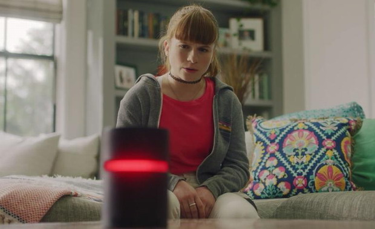

L'avenir d'Amazon Echo et de Google Home s'annonce effrayant

Nous avons tendance à suivre un chemin bien tracé en ce qui concerne les nouvelles technologies.
Premièrement, nous sommes conquis par elles. Ensuite, nous en devenons dépendants. Ce n’est qu’après qu’un temps non négligeable se soit écoulé que nous réalisons - ou crions : « Que diable suis-je en train de faire ? »
L1ZY, un ami qui vous veut du bien
Pour ce qui est des enceintes intelligentes comme Amazon Echo ou Google Home, nous en sommes probablement encore à la première phase.
Nous sommes émerveillés de la façon dont elles peuvent effectuer des tâches simples comme éteindre la lumière ou refuser d’admettre qu’elles sont un robot lorsqu’elles réservent un restaurant.
Nous pourrions craindre qu'elles fouinent un peu, mais n’est-ce pas le cas de n’importe quel terminal ?
Les cinéastes John Carlucci et Brandon LaGanke, autrement connus sous le nom de Ghost and Cow, ont exploré un peu plus loin l’avenir des relations avec les robots.
Une fois que nous avons laissé l'un de ces appareils entrer dans notre quotidien, que pourraient-ils faire ? Comment se comporteraient-ils ? Et quel rôle pourraient-ils jouer dans notre existence ?
Dans leur court métrage, structuré comme une série de publicités - et en fait un clip vidéo pour le groupe basé à Brooklyn, appelé Big Data -, une famille se révèle extrêmement heureuse de l’arrivée dans la vie de ses membres de L1ZY.
Dès le premier instant, celle-ci semble savoir tellement de choses sur chacun.
C'est flatteur d'être connu sans même avoir à se présenter. Elle connaît la chanson préférée de maman. Elle connaît le programme des enfants. Et aussi celui des parents.
Et ensuite, maman lâche ces mots fatidiques à son mari : « Es-tu sûr que nous voulons cette chose dans nos vies ? »
Jusqu'à quel point doit-on déléguer à une machine ?
L1ZY commence à se synchroniser avec chaque appareil de la maison. Sa synchronisation commence à provoquer un sentiment de malaise chez les membres de la famille.
Elle commence à dire à papa ce qu'il a le droit de manger. Après tout, elle a accédé à ses dossiers médicaux et à ses données biométriques. Elle sait qu'Alison, la fille, a des problèmes avec une camarade de classe. Elle propose donc à celle-ci un petit conseil robotique de parent.
Maman continue de s'inquiéter. L1ZY commande une seconde IA.
Lentement, mais très sûrement, L1ZY commence à prendre le contrôle de la famille. Non seulement elle devient un parent, mais elle assume le rôle de psychologue, de conseillère emploi et de médecin. Oh, et de tueur à gages.
Bientôt, la famille n'est plus tout à fait la même. Leurs mondes personnels sont déformés. Leur sens de la perspective est jeté sur un bûcher.
Rapidement, ils sont entièrement sous le commandement de la myriade de L1ZY qui a envahi leur maison.
Bien sûr, je ne penserais pas à suggérer que ceci est un présage exact de notre futur. Je ne rêverais pas non plus de suggérer que ce n'est pas le cas.
Alors que nous renonçons de plus en plus à nos responsabilités fondamentales au profit de machines et que nous communiquons de plus en plus d'informations à des serveurs distants, comment empêcher nos enceintes intelligentes de devenir nos maîtres, mais nos maîtres manipulateurs ?
Après tout, ils en sauront plus que nous. Et on nous a toujours dit que la connaissance, c'est le pouvoir.
On nous a également dit que le pouvoir corrompt. Donc s’il vous plaît, regardez la vidéo jusqu'à la fin.